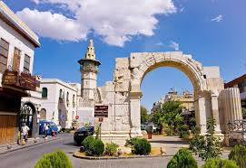
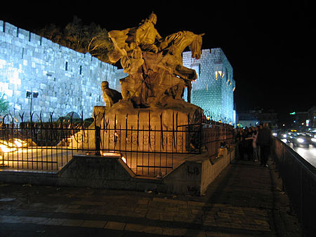
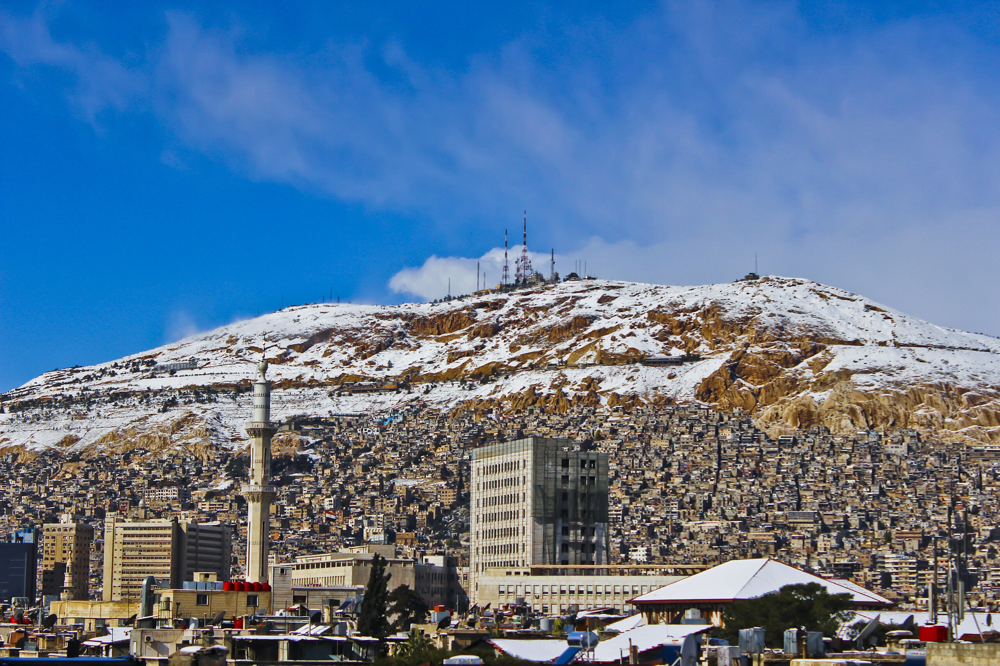

معالم دمشق التاريخية

المدينة القديمة
حارات ضيقة مليئة بالتاريخ، تضم سوق الحميدية وبيوتاً دمشقية تقليدية بفناءات مزينة بالياسمين.

المسجد الأموي
أحد أعظم المساجد في العالم الإسلامي، يعود تاريخه إلى القرن الثامن، ويتميز بفسيفساء مذهلة.

قلعة دمشق
حصن أيوبي تاريخي يقع في قلب المدينة القديمة، يعكس قوة دمشق العسكرية عبر العصور.

جبل قاسيون
نقطة مشاهدة بانورامية تطل على دمشق، تشتهر بالمطاعم وأجواء المساء الساحرة.